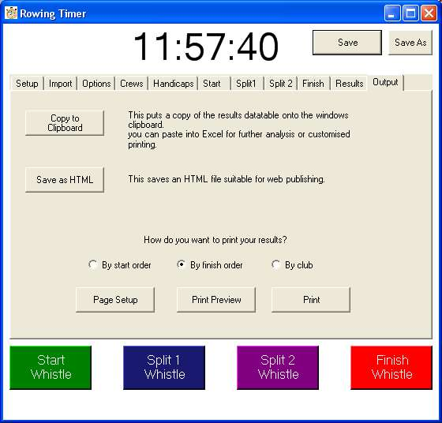

Output
Here is where I hope anyone who remains unimpressed will alter their viewpoint.
You have three options for outputting your results.
-
1. You can copy the results table to Excel, using the windows clipboard.
You will see three extra columns... these are the numerical values I have used to sort by club,
category and "adj time".
But why would you want to do this when you have two better options........
-
2. Save an HTML version of your results. An example is Here.
-
3. Or preview and print them out immediately.
Rowing timer automatically formats such that all columns fit to the width of a page.
It chooses the largest font which will fit.
As a result, choosing a paper setting of "landscape" will give you a bigger display.
